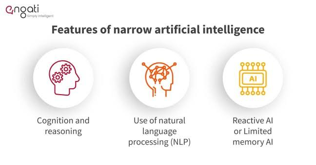
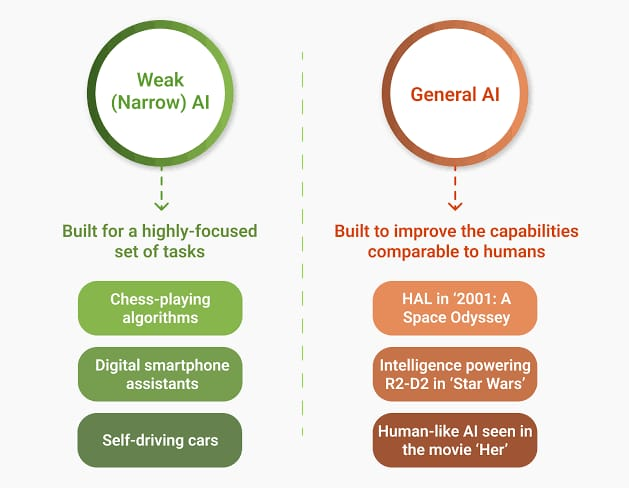

Artifical Intelligence Technology
God father of Artifical Intelligence

Certainly, John McCarthy (September 4, 1927 October 24, 2011) was an American computer scientist and cognitive scientist who is often referred to as the "father of artificial intelligence" (AI). He made significant contributions to the field of computer science and AI. Here are some key highlights from his caree
- Creation of LISP: One of McCarthy's most notable achievements was the development of the programming language LISP (LISt Processing), which became a fundamental tool in AI research. LISP was designed to work with symbolic expressions and enabled researchers to manipulate and process data in a way that was particularly suited for AI applications.
- Dartmouth Workshop : In 1956, McCarthy organized the Dartmouth Workshop, a seminal event in the history of AI. The workshop brought together a group of researchers who coined the term "artificial intelligence" and laid the foundation for AI as a field of study.
- Time-sharing Systems : McCarthy played a role in the development of time-sharing computer systems, which allowed multiple users to access a computer simultaneously. This innovation was crucial for the development and dissemination of computer science and AI research.
- Contributions to AI Research : McCarthy made important contributions to various areas of AI research, including formal logic, knowledge representation, problem-solving, and machine learning. His work on symbolic reasoning and automated theorem proving laid the groundwork for many AI applications.
- AI Winter and Recovery : McCarthy witnessed the rise and fall of interest in AI research, including periods of reduced funding and enthusiasm known as "AI winters." He remained committed to the field and played a role in its recovery during subsequent periods of renewed interest and advancement.
- Influence on Education : McCarthy was involved in academia and education throughout his career, teaching at institutions such as Dartmouth College, Stanford University, and the Massachusetts Institute of Technology (MIT). He mentored numerous students who went on to become influential figures in AI research.
- Awards and Recognition : McCarthy's contributions to computer science and AI were widely recognized. He received numerous awards, including the Turing Award in 1971 for his work in the area of artificial intelligence.
History of Artifical Intelligence
The history of AI (Artificial Intelligence) is a fascinating journey that spans over several decades. Here's a condensed overview of the key milestones and developments in AI technology:
- 1950s-1960s: The Birth of AI
The term "Artificial Intelligence" was coined by John McCarthy in 1956 at the Dartmouth Workshop.
Early AI research focused on symbolic reasoning and problem-solving, leading to the creation of programs like the Logic Theorist and the General Problem Solver.
- 1960s-1970s: Rule-Based Systems and Expert Systems
Research shifted towards rule-based systems, which encoded human expertise as a set of rules.
In 1965, ELIZA, a natural language processing program, was developed by Joseph Weizenbaum, showcasing the potential of communication with computers.
MYCIN (early 1970s) was an expert system designed for medical diagnosis, demonstrating AI's potential in specialized domains.
- 1980s: Knowledge-Based Systems and Neural Networks
Expert systems continued to evolve, with emphasis on knowledge representation and reasoning.
Neural networks gained popularity, and backpropagation was developed to train multi-layer perceptrons.
However, AI research faced limitations and challenges, leading to a period known as the "AI Winter."
- 1990s: Machine Learning and Practical Applications
Machine learning techniques like Support Vector Machines (SVMs) and decision trees gained prominence.
Practical AI applications emerged, such as speech recognition, computer vision, and recommendation systems.
- 2000s: Big Data and Deep Learning
Advances in data collection and storage fueled the growth of AI.
Deep learning techniques, particularly Convolutional Neural Networks (CNNs) and Recurrent Neural Networks (RNNs), revolutionized areas like image and speech recognition.
- 2010s: Deep Learning Breakthroughs and AI Resurgence
Deep learning achieved remarkable results, such as beating human performance in image recognition and playing complex games like Go.
The availability of large datasets and increased computational power facilitated AI progress.
AI applications expanded into areas like natural language processing, autonomous vehicles, and healthcare.
- Present and Beyond: AI in the Modern World
AI is deeply integrated into various aspects of daily life, including virtual assistants, recommendation systems, and fraud detection.
Ethical concerns and discussions about AI's impact on society, including bias and job displacement, gained prominence.
Ongoing research focuses on explainable AI, reinforcement learning, robotics, and addressing challenges related to safety and ethics.
Classification Of Artifical Intelligence
Narrow Artifical Intelligence
General Artifical Intelligence
superintelligence AI
Narrow AI, also known as Weak AI, refers to artificial intelligence systems that are specialized and capable of performing a specific task or a limited range of tasks. These systems are designed to excel in their designated domain but lack the general cognitive abilities and understanding that humans possess. Here are some details and examples of Narrow AI

Characteristics of Narrow Artifical Intelligence
- Specialized Functionality: Narrow AI systems are created with a specific purpose in mind. They are highly optimized for performing a particular task or solving a specific problem.
- Limited Context: These systems operate within a well-defined context and struggle when faced with tasks outside their designated domain
- Data-Driven: Narrow AI systems rely on large datasets to learn and improve their performance. They apply patterns and correlations found in the data to make predictions or decisions.
- Lack of Understanding: Despite their impressive performance in their specific tasks, narrow AI systems lack true comprehension, reasoning, or consciousness.
Examples of Narrow Artifical Intelligence
- Virtual Personal Assistants: Virtual assistants like Apple's Siri, Amazon's Alexa, and Google Assistant are examples of Narrow AI. They can answer questions, set reminders, play music, and perform other tasks within their programmed abilities.
- Recommendation Systems: Platforms like Netflix, Amazon, and Spotify use Narrow AI to analyze user preferences and suggest movies, products, or music based on past behaviors.
- Image and Speech Recognition: Narrow AI is used extensively in image and speech recognition applications. For example, facial recognition technology in smartphones, voice assistants, and social media platforms relies on Narrow AI algorithms.
- Language Translation: Online translation services like Google Translate utilize Narrow AI to convert text from one language to another by analyzing patterns in multilingual text data.
- Fraud Detection: Banks and financial institutions employ Narrow AI to detect fraudulent transactions by analyzing patterns of unusual behavior in real-time
- Autonomous Vehicles: Self-driving cars use Narrow AI to interpret sensor data and make driving decisions based on road conditions, traffic signals, and other vehicles.
- Medical Diagnosis: AI systems can assist medical professionals in diagnosing diseases by analyzing medical images, such as X-rays and MRIs, to detect anomalies.
- Gaming: AI opponents in video games often use Narrow AI algorithms to simulate human-like behavior, making decisions and adapting strategies based on the player's actions.
- Spam Filtering: Email services use Narrow AI to filter out spam messages based on patterns in the content and sender information.
- Chatbots: Many websites and customer service applications use chatbots powered by Narrow AI to interact with users and answer frequently asked questions.
Examples of General Artifical Intelligence

General AI, also known as Artificial General Intelligence (AGI) or Strong AI, refers to a level of artificial intelligence that possesses human-like cognitive abilities, enabling it to understand, learn, and apply knowledge across a wide range of tasks, just as humans can. Unlike Narrow AI, which is designed for specific tasks, General AI is capable of performing any intellectual task that a human being can do
Here are some key details about General AI
- Cognitive Abilities: General AI would possess a wide range of cognitive abilities similar to human intelligence, including reasoning, problem-solving, creativity, perception, natural language understanding and generation, learning, memory, emotional understanding, and adaptability. It would be able to transfer knowledge and skills from one domain to another, exhibiting a high level of generalization
- Learning and Adaptation: General AI would be capable of learning from experiences and adapting to new situations. It would not require explicit programming for each task but could learn from data and interactions, making it highly flexible and capable of handling novel scenarios.
- Common Sense and Contextual Understanding: General AI would possess common sense knowledge and an understanding of context, enabling it to interpret ambiguous situations, make reasonable judgments, and navigate real-world complexities effectively.
- Self-Awareness and Reflection: Some envision General AI as having a degree of self-awareness or self-reflection, allowing it to introspect, analyze its own thought processes, and potentially improve its own abilities.
- Autonomous Decision Making: General AI would be capable of autonomous decision-making based on a deep understanding of situations, ethical considerations, and long-term consequences. It would be able to make informed choices even in complex and unfamiliar situations.
- Communication and Collaboration: General AI would communicate with humans and other AI systems in natural language, making interactions more intuitive and accessible. It could collaborate with humans on a wide range of tasks, effectively becoming a partner in problem-solving.
- Technological Challenges: Achieving General AI poses significant technological challenges. It requires advances in various fields, including machine learning, natural language processing, robotics, cognitive psychology, ethics, and more. The development of human-level reasoning and understanding remains a complex task.
- Ethical and Societal Implications: The development of General AI raises ethical and societal concerns, including issues related to control, bias, transparency, job displacement, privacy, safety, and the potential for superintelligence. Ensuring the responsible and beneficial use of General AI is a critical consideration.
- Speculation and Future Prospects: As of now, General AI remains largely speculative and theoretical. While significant progress has been made in AI research, we have not yet achieved a true General AI system. Researchers continue to work towards understanding the nature of intelligence and developing approaches that could lead to its realization.
Examples of superintelligence AI
"Super AI" is not a recognized or standard term in the field of artificial intelligence. It seems like you might be referring to "superintelligence," which is a concept often discussed in the context of AI research.
Superintelligence refers to a hypothetical AI that surpasses human intelligence in virtually every aspect. It's an AI that would be capable of outperforming the best human minds in a wide range of cognitive tasks. The idea of superintelligence raises significant ethical, philosophical, and practical concerns, as well as potential benefits.
Key points about superintelligence
- Levels of AI: Superintelligence is often considered to be a level of AI development beyond "narrow" or "weak" AI, which is designed for specific tasks, and "general" or "strong" AI, which could understand, learn, and perform any intellectual task that a human being can.
- Potential Impact: The development of superintelligence could have profound effects on society, economics, politics, and even the future of humanity. Some researchers and thinkers have raised concerns about the possibility of an "intelligence explosion" where a superintelligent AI could rapidly improve its own capabilities, potentially leading to unpredictable outcomes.
- Control and Safety: A major challenge associated with superintelligence is ensuring its control and safety. If an AI becomes vastly more intelligent than its creators, it could potentially become difficult to predict or manage its behavior. Ensuring that a superintelligent AI acts in ways that align with human values and goals is a significant area of research.
- Ethical Considerations: The development of superintelligence also raises ethical questions about the rights and responsibilities of such an entity. It could potentially have moral standing and rights, and its actions could have far-reaching consequence
- Approaches and Speculation: Researchers have proposed various approaches to achieving superintelligence, including recursively improving existing AI systems, creating AI systems that can self-improve, or directly emulating the human brain's cognitive processes. However, achieving superintelligence is still largely speculative, and there is ongoing debate about the feasibility and timeline for its development.
- Benefits and Risks: While superintelligence could bring about transformative benefits, such as solving complex problems, advancing scientific research, and improving human well-being, it also presents substantial risks if not properly developed and controlled.